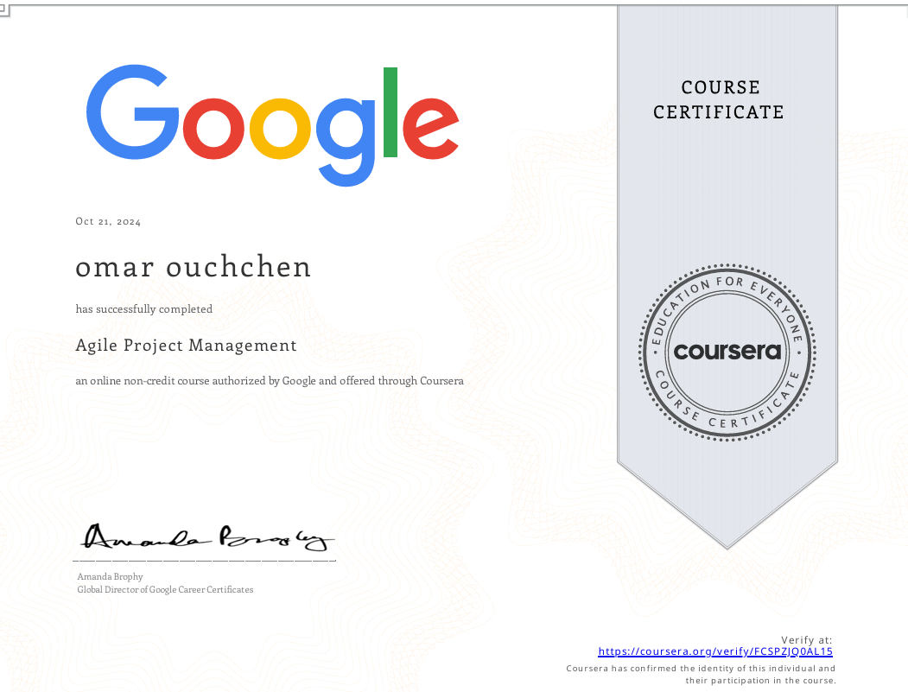

My Certificates
Explore some of the certificates I've earned, showcasing my skills and achievements in the field of data science, software development, and more.
Python for Data Science, AI & Development

Comprehensive training in Python, covering data science, artificial intelligence, and software development concepts.
Institution: Coursera | Issued on: October 2024
Foundations: Data, Data, Everywhere

Learned the fundamental concepts of data and its widespread impact on industries, including how data-driven decisions are made.
Institution: Coursera | Issued on: September 2024
Ask Questions to Make Data-Driven Decisions

Mastered the skills of asking the right questions to drive data-centric decisions, focusing on data analysis techniques.
Institution: Coursera | Issued on: August 2024
Machine Learning

Completed a specialized course in machine learning, understanding the algorithms and models used for data analysis and prediction.
Institution: Coursera | Issued on: July 2024
Agile Project Management

Learned Agile methodologies and project management principles, understanding how to manage projects in an adaptive and flexible manner.
Institution: Coursera | Issued on: June 2024
Exploring Data Analysis for Machine Learning

Acquired key skills for analyzing data to prepare it for machine learning applications, focusing on data preprocessing and visualization.
Institution: Coursera | Issued on: November 2024